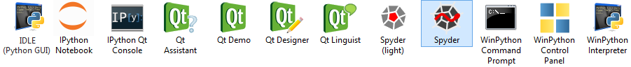

Project Home is on Github, downloads pages are on Sourceforge and Github, md5-sha , Discussion Group
Recent Releases
Release 2020-03 of August 22nd, 2020
Highlights (*): Spyder-4.1.4, Jupyterlab-2.2.4, VSCode-1.48.0, Numpy-1.19.1+mkl, SciPy-1.5.2
- WinPython64-3.8.5.0dot = Python 3.8 64bit only : Changelog, Packages
- WinPython32-3.8.5.0dot = Python 3.8 32bit only : Changelog, Packages
- WinPython64-3.8.5.0 = Python 3.8 64bit + PyQt5 + Spyder : Changelog, Packages
- WinPython64-3.8.5.0cod = Python 3.8 64bit + PyQt5 + Spyder + VSCode : Changelog, Packages
WinPython 3.8 Downloads (**) via SourceForge and Github
WinPython 3.9 Downloads (**) via SourceForge and Github
Release 2020-02 of May 30th, 2020
Highlights (*): Spyder-4.1.3, Jupyterlab-2.1.1, VSCode-1.45.1, scikit_learn-0.23.1, Cartopy-0.18.0, Trio-0.15.1
- WinPython64-3.7.7.1dot = Python 3.7 64bit only : Changelog, Packages
- WinPython32-3.7.7.1dot = Python 3.7 32bit only : Changelog, Packages
- WinPython64-3.7.7.1 = Python 3.7 64bit + PyQt5 + Spyder : Changelog, Packages
- WinPython64-3.7.7.1cod = Python 3.7 64bit + PyQt5 + Spyder + VSCode : Changelog, Packages
- WinPython64-3.8.3.0dot = Python 3.8 64bit only : Changelog, Packages
- WinPython32-3.8.3.0dot = Python 3.8 32bit only : Changelog, Packages
- WinPython64-3.8.3.0 = Python 3.8 64bit + PyQt5 + Spyder : Changelog, Packages
- WinPython64-3.8.3.0cod = Python 3.8 64bit + PyQt5 + Spyder + VSCode : Changelog, Packages
WinPython 3.7 Downloads (**) via SourceForge and Github
WinPython 3.8 Downloads (**) via SourceForge and Github
Release 2020-01 of March 26th, 2020 (this release may require from Windows 10 users a missing system DLL, see (*) )
Highlights (*): Spyder-4.1.1, Jupyterlab-2.0.1, VSCode-1.43.1, Numpy-1.18.2, Pandas-1.0.3, Matplotlib-3.2.1, Bokeh-2.0.0
- WinPython64-3.7.7.0dot = Python 3.7 64bit only : Changelog, Packages
- WinPython32-3.7.7.0dot = Python 3.7 32bit only : Changelog, Packages
- WinPython64-3.7.7.0 = Python 3.7 64bit + PyQt5 + Spyder : Changelog, Packages
- WinPython64-3.7.7.0cod = Python 3.7 64bit + PyQt5 + Spyder + VSCode : Changelog, Packages
- WinPython64-3.8.2.0dot = Python 3.8 64bit only : Changelog, Packages
- WinPython32-3.8.2.0dot = Python 3.8 32bit only : Changelog, Packages
- WinPython64-3.8.2.0 = Python 3.8 64bit + PyQt5 + Spyder : Changelog, Packages
- WinPython64-3.8.2.0cod = Python 3.8 64bit + PyQt5 + Spyder + VSCode : Changelog, Packages
WinPython 3.7 Downloads (**) via SourceForge and Github
WinPython 3.8 Downloads (**) via SourceForge and Github (not available for Python 3.8 : Tensorflow, Cartopy)

Overview
WinPython is a free open-source portable distribution of the Python programming language for Windows 8/10 and scientific and educational usage.

It is a full-featured (see our Wiki) Python-based scientific environment:
- Designed for scientists, data-scientists, and education (thanks to NumPy, SciPy, Sympy, Matplotlib, Pandas, pyqtgraph, etc.):
- interactive data processing and visualization using Python with Spyder and Jupyter/IPython, Pyzo, IDLEX or IDLE
- fully integrated Cython and Numba! See included example
- connectors (cffi, odbc, rpy2, scilab2py, requests, ...) for advanced users
- Portable:
- Runs out of the box(*) on any Windows 8+ with 2GB Ram (Jupyter Notebook will require a recent browser)
- The WinPython folder can be moved to any location (**) (local, network, USB drive) with most of the application settings
- Flexible:
- You can install as many WinPython distributions as you want on the same machine: each one is isolated and self-consistent
- These installations can be of different versions of Python (3.7/3.8/3.9...)
- Customizable:
- The integrated WinPython Package Manager (WPPM) helps installing, uninstalling or upgrading Python packages
- It's also possible to install or upgrade packages using pip from the WinPython command prompt
- A configuration file allows you to set environment variables at runtime
WinPython is something different from other Python Distributions (see historic motivation and concept):
- non-invasive: WinPython lives entirely in its own directory, without any OS installation
- customizable: add your missing packages, zip the WinPython directory and give it to your students
- do your own version: a winpython-creator kit is made available for you
Portable or not, the choice is yours!
WinPython is a portable application, so the user should not expect any integration into Windows explorer during installation. However, the WinPython Control Panel allows to "register" your distribution to Windows (see screenshot below).

Registering your WinPython installation will:
- associate file extensions .py, .pyc and .pyo to Python interpreter
- register Python icons in Windows explorer
- add context menu entries Edit with IDLE and Edit with Spyder for .py files
- register WinPython as a standard Python distribution (standard Python Windows installers will see WinPython in Windows registry)
(*) For recent WinPython, Windows 8..10 users may have to install missing system DLL Microsoft Visual C++ Redistributable for Visual Studio 2017..2019 (vc_redist_x86.exe for WinPython 32bit, vc_redist_x64.exe for Winpython 64bit)
(*) For best Winpython 2018-01 and later experience, it is recommended to have Winpython base directory path smaller than 37 characters. example: C:\Users\xxxxxxxx\Downloads\WinPython
(**) Since WinPython 2019-02, all installers are just 7zip auto-extracts.